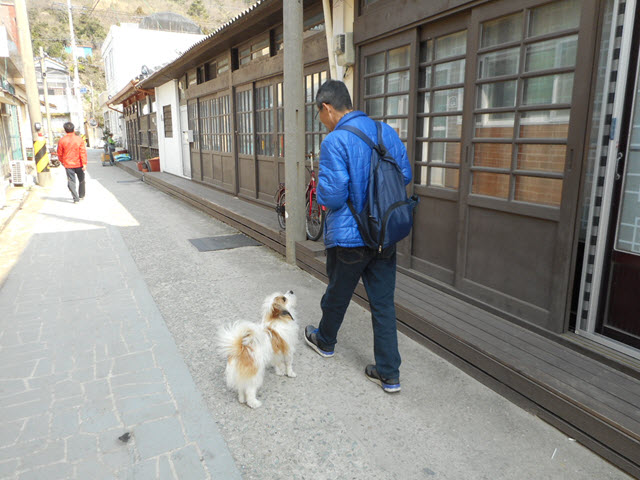
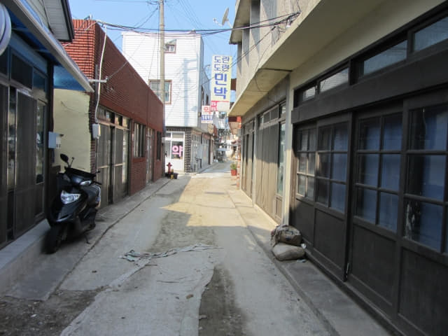

離開道樂里油菜花田山坡上的展望台, 沿馬路一直慢慢向下走, 穿過長長的燦爛櫻花路, 約半小時便來到山下青山島港旁的一個村莊 — 道清里村, 估計這裡是11號慢行路的其中一段, 便沿小路走進村莊。
11號慢行路之所以稱為迷宮路, 最主要原因是官網上的地圖比較模糊, 又不太清晰, 令旅客好像走進了迷宮, 最終都無法完整地走畢整條步行道。我們在道清里村山坡上的一個分叉路弄不清方向, 又沒有標示, 最終都錯過其中一小小段, 也不算100%走完整條11號慢行路, 只可以說95%完成。以下是我靠記憶及官網資料繪製的完整11號慢行路, 希望來青山島遊覽的朋友可以順利走畢全程。

沿小路走進道清里村, 道路兩旁的房子頗為高級, 看來都是比較富裕的人家。

間中也有一些比較樸素和傳統的房子。
11號慢行路「청산지역아동센터」標示
哈哈~~ 終於看到青山島11號慢行路的標示, 方向走對了! 唉! 她又偷拍我的舉動! 這標示也是我繪製的地圖上「청산지역아동센터」的地方。
右邊的路也是11號慢行路, 我們稍後就是在道清里村山坡上的一個分叉路弄不清方向, 又沒有標示下, 沒法返回這裡, 最終錯失了這其中一小段。
一直沿道清里村中小路向前走。
穿過一段古樸街道, 可以稱為青山島的古街。
有一隻可愛汪汪在古街內沿途跟著我走, 並不時逗我和牠玩。

沃爾瑪超級市場 (한아름마트) 分叉路
走出了古街, 來到一個十字路口, 感覺環境好像有點熟悉的, 看清楚, 馬路對面便是我們昨晚買蛋糕和碗麵的那間超級市場, 店舖名稱是沃爾瑪超級市場 (한아름마트), 也就是我繪製的地圖上「한아름마트」的地方。
轉身望望, 這便是我們昨晚吃烤豬肉的那間餐廳。
在這裡有兩個選擇, 第一: 沿前面的小巷走便是青山島碼頭, 也是11號慢行路碼頭始終點; 第二: 沿右邊的馬路往上走 (地圖上虛線的那一段路線), 也是11號慢行路道清里村山坡上始終點。
我們選擇了先沿前面的小巷走往青山島碼頭, 然後掉頭往11號慢行路道清里村山坡上始終點, 最後循11號慢行路, 穿過道清里村返回古街, 這樣便可走畢整段11號慢行路。
循馬路對面窄狹的小巷走, 這裡是11號慢行路的其中一段。
小巷彎彎曲曲的, 永遠無法看清楚前路, 難怪被稱為迷宮路。

沿途的11號慢行路標示
安東路．青山波市文化路
繼續沿小巷向前走, 來到青山波文化路, 房屋牆壁上都繪了鯖魚和藍點馬鮫的圗畫。
11號慢行路其中一段的安東路保留著從1930年代至1970年代末為止繁華的青山波市古生活文化。所謂波市, 即是魚獲豐收期所進行的海鮮市場, 而在青山島所進行的主要是藍點馬鮫波市和鯖魚波市, 也是青山島沿岸最盛產的兩種魚類。
青山波市歷史介紹。
這裡有一個分叉路口, 位置在下面地圖標誌的地方, 左邊往山上的都是11號慢行路, 通往青山小學附近, 可以說是一條捷徑, 不過比較難走。
一直向前走。
走出小巷, 便來到青山碼頭, 也是11號慢行路碼頭始終點。

{kind=link}
{kind=link}